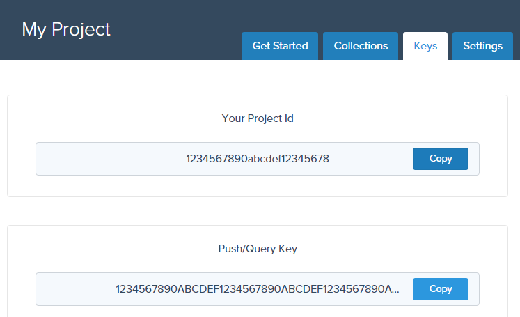

Connect is a SaaS analytics service providing real-time, scalable querying and visualization of your event data.
Use simple APIs and SDKs to easily push semi-structured events from your app without the need to configure schemas or index your data. Write elegant queries to analyze your data and easily create visualizations for both internal users and external customers.
The following guide will describe how to best model your events, push them to the service and query them in real-time.
When using Connect to analyze and visualize your data, it is important to understand how best to model your events. The way you structure your events will directly affect your ability to answer questions with your data. It is therefore important to consider up-front the kind of questions you anticipate answering.
An event is an action that occurs at a specific point in time. To answer "why did this event occur?", our event needs to contain rich details about what the "world" looked like at that point in time.
Put simply, events = action + time + state.
For example, imagine you are writing an exercise activity tracker app. We want to give users of your app the ability to analyze their performance over time. This is an event produced by our hypothetical activity tracker app:
{
"type": "cycling",
"timestamp": "2015-06-23T16:31:56.587Z",
"duration": 67,
"distance": 21255,
"caloriesBurned": 455,
"maxHeartRate": 182,
"user": {
"id": "638396",
"firstName": "Bruce",
"lastName": "Jones",
"age": 35
}
}
What happened? In the above example, the action is an activity was completed. We group all events of the same action into
a single collection. In this case, we could call our collection activityCompleted, or alternatively, just activity.
When did it happen? In the above example, we specified the start time of the activity as the value of the timestamp property. The top-level timestamp property is a special property in Connect. This is because time is an essential property of event data - it's not optional.
When an event is pushed to Connect, the current time is assigned to the timestamp property if no value was provided by you.
What do we know about this action? What do we know about the entities associated with this action? What do we know about the "world" at this moment in time? Every property in our event, besides the timestamp and the name of the collection, serves to answer the those questions. This is the most important aspect of our event it's where all the answers live.
The richer the data you provide in your event, the more questions you can answer for your users, therefore it's important to enrich your events with as much information as possible. In stark contast to the relational model where you would store this related information in separate tables and join at query time, in the event model this data is denormalized into each event, so as to know the state of the "world" at the point in time of the event.
Events have the following core properties:
It is also important to consider how to group events into collections to enable future queries to be answered.
Consider our example event again, notice the age property of the user:
{
"type": "cycling",
...
"user": {
"id": "638396",
"firstName": "Bruce",
"lastName": "Jones",
"age": 35
}
}
The user's age is going to be duplicated in every activity he/she completes throughout the year. This may seem inefficient; however, remember that Connect is about analyzing. This denormalization is a real win for analysis; the key is that event data stores state over time, rather than merely current state. This helps us answer questions about why something happened, because we know what the "world" looked like at that point of time.
For example imagine we wanted to chart the average distance cycled per ride, grouped by the age of the rider at the time of the ride. We could simply execute the following query:
var query = connect.query('activity')
.select({ averageDistance: { avg: 'distance' } })
.groupBy('user.age');
var chart = connect.chart(query, '#chart', {
title: 'Average distance per activity by age',
chart: { type: 'bar' }
});
It's this persistence of state over time that makes event data perfect for analysis.
Events occur at a single point in time and record rich information about the event and state of the "world" at the point in time of that event. By their very nature, events cannot change, as they always record state at the point in time of the event.
For example, in our example event above, while Bruce Jones may now be many years older, at the time he completed his bike ride, he was 35 years of age. By ensuring this event remains immutable, we can correctly analyze bike riding over time by 35-year-olds.
Consider events as recording history - as much as we'd occassionally like to, we can't change history!
Events are rich in that they specify very detailed state. They specify details about the event itself, the entities involved and the state of the "world" at that point in time.
Consider our example activity event - the top level type property describes something about the activity itself (a run, a bike ride, a kayak etc.). The user property specifies rich information about the actor who performed the event. In this case it's the person who completed the activity, complete with their name and age.
In reality, though, we may decide to include a few other nested entities in our event, for example:
{
"type": "cycling",
...
"user": {
"id": "638396",
"firstName": "Bruce",
...
},
"bike": {
"id": "231806",
"brand": "Specialized",
"model": "S-Works Venge"
}
"weather": {
"condition": "Raining",
"temperature": 21,
"humidity": 99,
"wind": 17
}
}
Note our event now includes details about the bike used and the weather conditions at the time of the activity. By adding this extra bike state information to our event, we have opened up extra possibilities for interrogating our data. For example, we can now query the average distance cycled by each model of bike that was built by "Specialized":
var query = connect.query('activity')
.select({ averageDistance: { avg: 'distance' } })
.groupBy('bike.model');
.filter({
'bike.brand': 'Specialized'
});
The weather also provides us with exciting insights - what did the world look like at this point in time? What was the weather like? Storing this data allows us to answer yet more questions. We can test our hypothesis that "older people are less scared of riding in the rain" by simply charting the following query:
var query = connect.query('activity')
.select({ averageDistance: { avg: 'distance' } })
.groupBy(['user.age', 'weather.condition']);
As you can see, the richer and more denormalized the event, the more interesting answers can be derived when later querying.
Events in Connect should be considered semi-structured - that is, they have an inherent structure, but it is not defined. This means you can, and should, push as much detailed information about an event and the state of the "world" as possible. Moreover, this allows you to improve your schema over time and add extra information about new events as that information becomes available.
It is important when modeling your events to consider how you intend to group those events into collections. This is a careful balance between events being broad enough to answer queries for your users, while specific enough to be manageable.
In our activity example, the activity contains different properties based on what the type of activity. Our cycling activity contains properties associated with the bike that was used, while a kayaking activity may contain properties associated with a kayak that is used.
Because a kayaking event may have different properties to a running event, it might seem logical to put each of them in distinct collections. However, if we
had distinct cycling, running and kayaking collections, we would lose the opportunity to query details that are common to all activities.
As a general rule, consider the common action among your events and decide if the specific variants of that action warrant grouping those events together.
Connect allows you to manage multiple projects under a single account so that you can easily segregate your collections into logical projects.
You could use this to separate analytics for entire projects, or to implement separation between different environments (e.g. My Project (Prod) and My Project (Dev)).
To start pushing and querying your event data, you will need both a project ID and an API key. This information is available to you via the portal inside each project under the "Keys" tab:

By default, you can choose from four different types of keys, each with their own specific use:
Push/Query Key - you can use this key to both push events and execute queries.
You should only use this key in situations where it is not possible to isolate merely pushing or querying.
Push Key - you can only use this key to push events.
You should use this key in your apps where you are tracking event data, but do not require querying.
Query Key - you can only use this key to execute queries.
You should use this key in your reporting interfaces where you do not wish to track events.
Master Project Key - you can use this key to execute all types of operations on a project, including
pushing, querying and deleteing collections.
Keep this key safe - it is intended for very limited use and definitely should not be included in your main apps.
You must use your project ID and desired key to begin using Connect:
ConnectClient client = new AndroidConnectClient("YOUR_PROJECT_ID", "YOUR_API_KEY");
Welcome to android the docs!